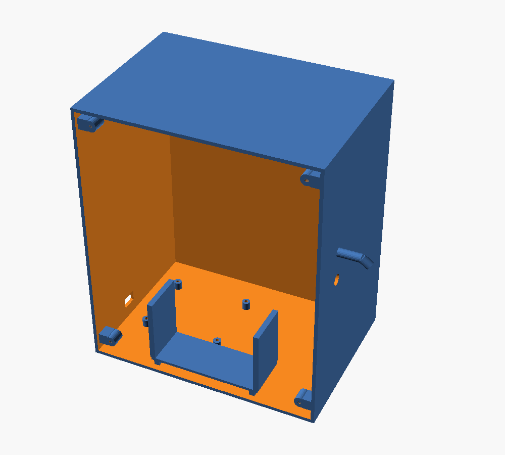
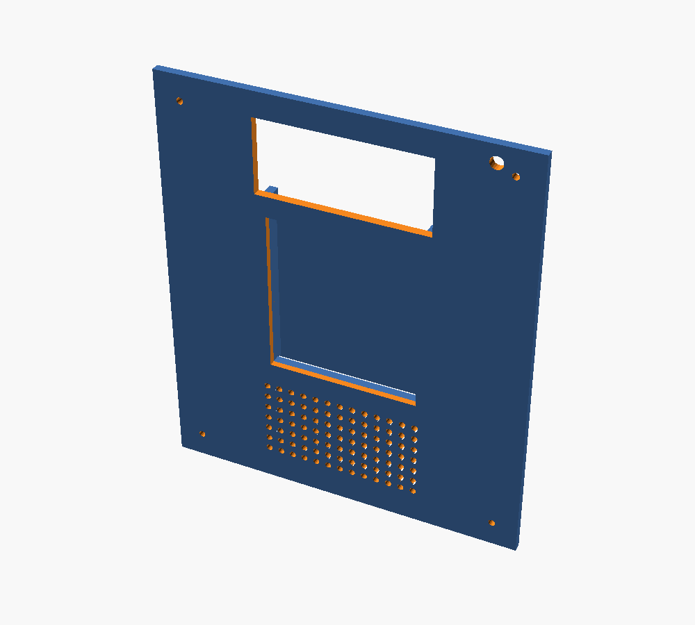

SAIT · INTP302 Capstone
SPEAKFIX
A device that turns spoken maintenance reports into instant, AI-generated tickets.

SAIT · INTP302 Capstone
A device that turns spoken maintenance reports into instant, AI-generated tickets.
The workflow
No app to open, no form to fill out. Just talk.
A technician presses the keypad and speaks the issue naturally into the USB-C lavalier microphone.
Speech-to-text runs locally on the Raspberry Pi 4 — audio is converted to text on-device before anything leaves the kiosk.
The transcript is sent to an AI model on Azure / Microsoft Foundry, which pulls out asset, location, issue type, and priority.
If the agent's structured output sets requires_human_review — because details are missing or ambiguous — the ticket pauses for a quick human clarification before it moves on.
A structured maintenance ticket is generated automatically and routed straight to the responsible owner — no dispatcher required.
Hardware
A compact stack of off-the-shelf components does all the work — no proprietary silicon required.

Shows live transcription and ticket status.
Runs the edge transcription and orchestrates the whole kiosk.
Starts a report and lets technicians confirm or correct details.
Reads back confirmations and status prompts.
Captures clear, close-range audio in noisy environments.
Industrial design
3D-printed and modeled from scratch in OpenSCAD — designed to be wall-mounted and durable.
Interactive viewer unavailable — showing static render instead.
Live STL model — download base · download lid



Under the hood
Raspberry Pi, Python, and OpenSCAD marks above are their official logos. Microsoft doesn't permit third-party redistribution of the Azure / Microsoft Foundry logos, so those two show a placeholder until you add the official files yourself from Microsoft's brand asset portal — drop them in as images/logo-azure.svg and images/logo-microsoft-foundry.svg and they'll appear automatically.
Who built it
SAIT program INTP302